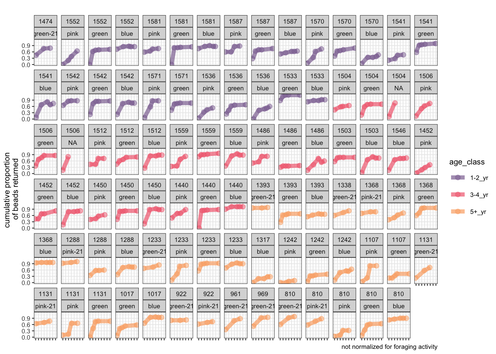

Deborah_bead_data
Biplabendu Das
06 September, 2022
## Set color scheme for age classes
age_colors <- c("#4EB9E6", "#397362", "#999215", "#991D34", "#F29544")Overview/Goals
Email from Deborah:
This data set comes from an experiment with harvester ants last summer. Harvester ant foragers bring in lots of seeds and parts of plants, some of which are rejected by ants inside the nest. Eventually, the refuse is carried out and put on the nest mound midden.
Here we presented small plastic beads coated in oil which the ants brought into the nest, and were later put back out on the midden, outside the colony, close to the nest entrance.
Bead data 2021
Load data
# read foraging_data.csv
for.dat <- read.csv(paste0(path_to_repo,"/data/foraging_data.csv"),
stringsAsFactors = F, header = T) %>% as_tibble()
# read bead data
bead.dat <- read.csv(paste0(path_to_repo, "/data/beads_out_new.csv"),
stringsAsFactors = F, header = T) %>% as_tibble()
# read colony-age data
colony.dat <- read.csv(paste0(path_to_repo, "/data/foraging_counts_08_13_22.csv"),
stringsAsFactors = F, header = T) %>% as_tibble() %>%
select(colonyID = colony_ID, everything()) %>%
# mutate(colonyID = as.factor(colonyID)) %>%
mutate(age_class = ifelse(age_2022 <= 2, "1-2_yr_old",
ifelse(age_2022 > 2 & age_2022 <= 4, "3-4_yr_old",
"older_than_5_yr")))Summarize the data
writeLines("What are the names of the colonies? \nShown as: Colony-ID")## What are the names of the colonies?
## Shown as: Colony-IDbead.dat %>%
select(colonyID) %>%
distinct() %>%
left_join(colony.dat, by="colonyID") %>%
head() %>%
arrange(age_2022)## # A tibble: 6 x 8
## colonyID quad age_2022 east north colony_type counted_08_13_22 age_class
## <int> <int> <int> <int> <dbl> <chr> <chr> <chr>
## 1 1474 6 3 597 472 Young "c" 3-4_yr_old
## 2 1393 3 7 381 589 Active Adult "C" older_than_…
## 3 1338 4 8 360 543 Active Adult "c" older_than_…
## 4 1368 4 8 426 466 Active Adult "" older_than_…
## 5 1131 5 21 563 636 Active Adult "C" older_than_…
## 6 922 5 22 463 589 Active Adult "" older_than_…# Specify the dates for green/pink beads
green.days <- c("8/23/21","8/24/21", "8/27/21","8/28/21") %>% as.Date(format = "%m/%d/%y")
pink.days <- c("8/25/21","8/26/21") %>% as.Date(format = "%m/%d/%y")Clean Data
df <-
bead.dat %>%
# retain only useful data
na.omit() %>%
# arrange by colony IDs
arrange(colonyID) %>%
mutate(date = as.Date(date, format = "%m/%d/%y")) %>%
mutate(colonyID = factor(colonyID)) %>%
# add a column that specifies the color of beads used
mutate(bead_col = ifelse(date %in% green.days[1:2], "green",
ifelse(date %in% green.days[3:4], "green-2",
ifelse(date %in% pink.days, "pink", NA)))) %>%
mutate(batch = ifelse(date %in% c(green.days[c(1,3)],pink.days[1]), "batch_A",
ifelse(date %in% c(green.days[c(2,4)],pink.days[2]), "batch_B",NA))) %>%
# # SIDE NOTE: Explore the original dataset
# mutate_at(vars(colnames(.)[names(.) %in% c(paste0("n_returned_Day",1:6))]),
# .funs = funs(ifelse(.=="", NA, as.character(.)))) %>%
# mutate_at(vars(colnames(.)[names(.) %in% c(paste0("n_returned_Day",1:6))]),
# .funs = as.numeric) %>% head()
# CLEAN: Keep only data for first three days of observations after presenting beads
select(num_out:n_returned_Day3, bead_col, batch) %>%
# format columns appropriately
mutate(n_collected = as.numeric(readr::parse_number(n_collected))) %>%
mutate(n_returned_Day1 = as.numeric(n_returned_Day1)) %>%
mutate(n_returned_Day2 = as.numeric(n_returned_Day2)) %>%
mutate(n_returned_Day3 = as.numeric(n_returned_Day3))
# query 1
# df %>%
# # summarize the data by batch and bead_col
# group_by(batch, bead_col, date) %>%
# summarize(n_colonies = n())
# query 2
# It seems the data for 25-Aug-2021, Colony-1474 is missing (or too little);
df <-
df %>%
# remove it
filter(!is.na(n_collected))CLEAN UP:
There are four colonies (1 green, 3 pink) that collect <30 of the 50 beads presented. [n_collected = 8, 9, 17, 20]. It might be a good idea to leave them out before we analyze the dat, at least for Colonies that collected ≤10 beads of the 50 presented. [cleanup 1]
Data for Colony 1288 (green-1; 24 to 26 Aug) shows that 48 beads were presented but 50 beads were collected at the refuse pile. Removing that from our dataset as I am unsure of the source of the error. [cleanup 2]
dat <-
df %>%
# remove the time column (not necessary; almost the same time)
select(-4) %>%
filter(!(bead_col=="pink" & colonyID %in% c("969","1338"))) %>% # cleanup 1
filter(!(bead_col=="green" & colonyID == "1288")) # cleanup
writeLines("Which colony-days remain after cleanup?")## Which colony-days remain after cleanup?dat %>%
select(date, colonyID) %>%
distinct() %>%
mutate(colonyID = as.numeric(as.character(colonyID))) %>%
left_join(colony.dat, by="colonyID") %>%
group_by(colonyID, age_2022, age_class) %>%
summarize(n_days = n()) %>%
arrange(age_2022)## # A tibble: 13 x 4
## # Groups: colonyID, age_2022 [13]
## colonyID age_2022 age_class n_days
## <dbl> <int> <chr> <int>
## 1 1474 3 3-4_yr_old 1
## 2 1524 3 3-4_yr_old 1
## 3 1423 5 older_than_5_yr 1
## 4 1393 7 older_than_5_yr 3
## 5 1338 8 older_than_5_yr 2
## 6 1368 8 older_than_5_yr 3
## 7 1288 11 older_than_5_yr 1
## 8 1233 12 older_than_5_yr 2
## 9 1131 21 older_than_5_yr 3
## 10 922 22 older_than_5_yr 3
## 11 961 22 older_than_5_yr 2
## 12 969 22 older_than_5_yr 1
## 13 810 25 older_than_5_yr 2## Part 5: Plot cum. prop.
tidydat.2021 <-
dat %>%
na.omit() %>%
## only keep the colonies that collected more than 40 beads
filter(n_collected >= 40) %>%
# Cumulative prop
# create the cumulative sums
mutate(cum_prop_day1 = n_returned_Day1/n_collected,
cum_prop_day2 = (n_returned_Day1+n_returned_Day2)/n_collected,
cum_prop_day3 = (n_returned_Day1+n_returned_Day2+n_returned_Day3)/n_collected) %>%
select(num_out, date, colonyID, n_collected, bead_col, batch:cum_prop_day3) %>%
pivot_longer(cols = starts_with("cum_prop"),
names_to = "day_of_obs",
values_to = "cum_prop_returned") %>%
mutate(day_of_obs = as.numeric(readr::parse_number(day_of_obs))) %>%
mutate(date = date+day_of_obs-1)
# # sumarrize the tidydat
# tidydat.2021 %>%
# group_by(batch, bead_col, date) %>%
# summarize(n_colonies = n())
#
# # what proportion of collected beads do they put out by day 3?
# tidydat.2021 %>%
# filter(day_of_obs=="3") %>%
# #
# # pull(n_collected) %>% sd()/sqrt(51)
# # sd()/sqrt(17) # 17 = length of cum_prop_returned
#
# group_by(bead_col, batch) %>%
# summarize(n_colonies=n(),mean_prop_returned=mean(cum_prop_returned))# Selecting old colonies
old.summ <-
tidydat.2021 %>%
mutate(colonyID = as.character(colonyID) %>% as.numeric()) %>%
left_join(colony.dat, by="colonyID") %>%
# select(date, colonyID, bead_col, day_of_obs, cum_prop_returned, age_2022) %>%
mutate(age_obs = age_2022-1) %>%
mutate(age_class = ifelse(age_obs <= 2, "1-2_yr_old",
ifelse(age_obs >= 5, "older_than_5_yr", "3-4_yr_old"))) %>%
mutate(age_class = factor(age_class, levels = c("1-2_yr_old", "3-4_yr_old", "older_than_5_yr"))) %>%
mutate(day_of_obs = paste0("D",day_of_obs,"_bN")) %>%
mutate(day_of_obs = factor(day_of_obs, levels = c("D1_bN", "D2_bN", "D3_bN"))) %>%
mutate(bead_col = factor(paste0(bead_col,"-21"))) %>%
mutate(ID = paste0(colonyID,"_",bead_col, "_", age_obs)) %>%
## change column names to make them compatible to the 2022 dataset
select(colonyID, date,
bead_color = bead_col,
age_2022, age_obs, age_class,
beads_collected = n_collected,
counted_when = day_of_obs,
cum_prop = cum_prop_returned)
old.summ %>%
as_tibble() %>%
filter(counted_when=="D3_bN") %>%
group_by(colonyID,age_class) %>%
summarize(n_reps = n()) %>%
right_join(old.summ %>% select(colonyID, age_obs) %>% distinct()) %>%
arrange(age_obs)## # A tibble: 11 x 4
## # Groups: colonyID [11]
## colonyID age_class n_reps age_obs
## <dbl> <fct> <int> <dbl>
## 1 1474 1-2_yr_old 1 2
## 2 1393 older_than_5_yr 1 6
## 3 1338 older_than_5_yr 1 7
## 4 1368 older_than_5_yr 1 7
## 5 1288 older_than_5_yr 1 10
## 6 1233 older_than_5_yr 1 11
## 7 1131 older_than_5_yr 2 20
## 8 922 older_than_5_yr 2 21
## 9 961 older_than_5_yr 1 21
## 10 969 older_than_5_yr 1 21
## 11 810 older_than_5_yr 2 24old.summ %>%
mutate(ID = paste0(colonyID,"_",bead_color, "_", age_obs)) %>%
ggplot() +
geom_line(aes(x=factor(counted_when),
y=cum_prop, group=ID, col=ID),
size=2,
alpha=0.6) +
facet_wrap(~ID, nrow = 2) +
theme_Publication(base_size = 10) +
# scale_color_manual(values=c("darkgreen","darkred")) +
scale_y_continuous(breaks = c(0,.2,.4,.6,.8,1),
labels = c("0", "", "0.4","","0.8",""),
limits = c(0,1)) +
xlab("Day of obs") +
ylab("Cumulutative proportion \nof beads returned")
old.summ %>%
ggplot(aes(x=counted_when, y=cum_prop,
fill=age_class, color=age_class, group=age_class)) +
geom_jitter(size=2, alpha=0.4, width=0.2) +
# geom_line(aes(group=colonyID), size=0.5, alpha=0.7) +
# geom_boxplot(alpha=0.3) +
geom_smooth(method = "lm", formula = y~log2(x+1),
level=0.95,
alpha=0.4, size = 2,
aes(color=age_class)) +
# geom_smooth(method = "lm", formula = y~x, alpha=0.3, aes(color=age_class, lty=age_class)) +
facet_grid(~age_class) +
# coord_flip() +
# scale_y_continuous(n.breaks = 3,
# labels = c("","0.5", "1")) +
theme_Publication(base_size = 15) +
# rotate x-axis lables
theme(axis.text.x=element_text(angle=90,hjust=1))+
# scale_fill_discrete() +
# scale_color_discrete()
# scale_fill_viridis_d(option="cividis") +
# scale_color_viridis_d(option = "cividis")
scale_fill_manual(values = age_colors) +
scale_color_manual(values = age_colors) +
labs(x = "Day-time of observation",
y= "cumulative proportion \nof beads returned",
subtitle = "Line indicates y ~ log2(x+1) + 95% CI")
Bead data 2022
filename <- "/Users/biplabendudas/Documents/05_postdoc/Deborah_Gordon/04_research/2022/02_bead_data/data/bead_data_2022/all_bead_data_2022/2022_bead_data_master_replicate_one_two_three_29Aug22.csv"
dat.2022 <- read.csv(filename,
header = T, stringsAsFactors = F,
na.strings = c(""," ","did_not_count","NA",
"did_not_check",
"it_rained_could_not_check")) %>%
as_tibble() %>%
# select the relevant columns
select(date, colonyID, age_class, age_2022,
bead_color, beads_put_out, beads_collected,
beads_returned_Day1_beforenoon,
beads_returned_Day1_afternoon,
beads_returned_Day2_morning,
beads_returned_Day2_beforenoon,
beads_returned_Day2_afternoon,
beads_returned_Day3_beforenoon,
beads_returned_Day4_morning,
beads_returned_Day4_beforenoon) %>%
# calculate the cumulative proportion of beads returned
group_by(date, bead_color) %>%
# filter out the colonies for which we still need to check the data
filter(!(colonyID=="1560" & bead_color=="green")) %>%
filter(!(colonyID=="1288" & bead_color=="green")) %>%
filter(!(colonyID=="1546" & bead_color=="green")) %>%
# convert all the bead count columns as numeric
mutate_at(vars(matches("beads_")), as.numeric) %>%
ungroup()
## Create a tidy dataset and calculate the cumulative proportion of beads returned by colonies
tidydat.2022 <-
dat.2022 %>%
# replace all the NAs with 0 to be able to calculate proportions
mutate_at(vars(matches("beads_")), function(x) ifelse(is.na(x), 0, x)) %>%
# day 1 - before noon
mutate(cum_prop_returned_D1_beforenoon = round(beads_returned_Day1_beforenoon/beads_collected, 2)) %>%
mutate(cum_prop_returned_D1_afternoon = round(cum_prop_returned_D1_beforenoon+beads_returned_Day1_afternoon/beads_collected, 2)) %>%
mutate(cum_prop_returned_D2_morning = round(cum_prop_returned_D1_afternoon+beads_returned_Day2_morning/beads_collected, 2)) %>%
mutate(cum_prop_returned_D2_beforenoon = round(cum_prop_returned_D2_morning+beads_returned_Day2_beforenoon/beads_collected,2)) %>%
mutate(cum_prop_returned_D2_afternoon = round(cum_prop_returned_D2_beforenoon+beads_returned_Day2_afternoon/beads_collected,2)) %>%
mutate(cum_prop_returned_D3_beforenoon = round(cum_prop_returned_D2_beforenoon+beads_returned_Day3_beforenoon/beads_collected,2)) %>%
mutate(cum_prop_returned_D4_morning = round(cum_prop_returned_D3_beforenoon+beads_returned_Day4_morning/beads_collected,2)) %>%
mutate(cum_prop_returned_D4_beforenoon = round(cum_prop_returned_D4_morning+beads_returned_Day4_beforenoon/beads_collected,2)) %>%
mutate(beads_collected_group = ifelse(beads_collected < 22, "less_than_22",
ifelse(beads_collected > 40,
"greater_than_40", "between_22_and_40"))) %>%
arrange(age_2022, beads_collected_group) %>%
select(colonyID,
age_2022, age_class,
beads_collected_group,
bead_color,
cum_prop_returned_D1_beforenoon:cum_prop_returned_D4_beforenoon,
everything())tidydat.2022 %<>%
## keep only colonies that collected at least 40 (of 50) beads offered
filter(beads_collected_group == "greater_than_40") %>%
pivot_longer(cols = starts_with("cum_prop"),
names_to = "counted_when",
values_to = "cum_prop") %>%
## format the ordinal columns correctly
mutate(counted_when = ifelse(counted_when == "cum_prop_returned_D1_beforenoon", "D1_bN",
ifelse(counted_when == "cum_prop_returned_D1_afternoon", "D1_aN",
ifelse(counted_when == "cum_prop_returned_D2_morning", "D2_M",
ifelse(counted_when == "cum_prop_returned_D2_beforenoon", "D2_bN",
ifelse(counted_when == "cum_prop_returned_D2_afternoon", "D2_aN",
ifelse(counted_when == "cum_prop_returned_D3_beforenoon", "D3_bN",
ifelse(counted_when == "cum_prop_returned_D4_morning", "D4_M",
"D4_bN")))))))) %>%
mutate(counted_when = factor(counted_when,
levels = c("D1_bN", "D1_aN",
"D2_M", "D2_bN", "D2_aN",
"D3_bN",
"D4_M", "D4_bN"))) %>%
mutate(bead_color = factor(ifelse(bead_color %in% c("light_blue", "dark_blue"), "blue", bead_color),
levels = c("pink","green","blue"))) %>%
mutate(colonyID = factor(colonyID)) %>%
mutate(date = as.Date(date, format="%m/%d/%y")) %>%
mutate(age_obs = age_2022) %>%
# ## remove the timepoints that we do not have data for
# pink beads (round one)
filter(!(bead_color=="pink" & counted_when == "D1_aN")) %>%
filter(!(bead_color=="pink" & counted_when == "D2_aN")) %>%
filter(!(bead_color=="pink" & counted_when == "D4_M")) %>%
filter(!(bead_color=="pink" & counted_when == "D4_bN")) %>%
# green beads (round two)
filter(!(bead_color=="green" & counted_when == "D2_aN")) %>%
filter(!(bead_color=="green" & counted_when == "D3_bN")) %>%
filter(!(bead_color=="green" & counted_when == "D4_M")) %>%
# blue beads (round three)
filter(!(bead_color=="blue" & counted_when == "D1_aN")) %>%
filter(!(bead_color=="blue" & counted_when == "D2_bN")) %>%
filter(!(bead_color=="blue" & counted_when == "D4_bN")) %>%
## select columns to make them compatible with 2021 dataset
select(colonyID, date,
bead_color,
age_2022, age_obs, age_class,
beads_collected, counted_when, cum_prop)Combine the 2021 and 2022 datasets
Currently showing all the data from 2021 and 2022.
## Combine the two data sets
tidydat <- rbind(old.summ, tidydat.2022) %>%
mutate(counted_when = factor(counted_when,
levels = c("D1_bN", "D1_aN",
"D2_M", "D2_bN", "D2_aN",
"D3_bN",
"D4_M", "D4_bN"))) %>%
mutate(age_class = ifelse(age_obs <= 2, "1-2_yr",
ifelse(age_obs > 2 & age_obs <= 4, "3-4_yr",
ifelse(age_obs >=5 & age_obs < 10, "5-9_yr",
"10+_yr")))) %>%
mutate(age_class = factor(age_class,
levels = c("1-2_yr", "3-4_yr",
"5-9_yr", "10+_yr")))
# # use only 2022 data
# tidydat <- tidydat.2022Cumulative bead returned
tidydat %>%
na.omit() %>%
ggplot(aes(x=counted_when, y=cum_prop, fill=age_class, color=age_class, group=age_class)) +
geom_jitter(size=2, alpha=0.4, width=0.2) +
# geom_line(aes(group=colonyID), size=0.5, alpha=0.7) +
# geom_boxplot(alpha=0.3) +
geom_smooth(method = "lm", formula = y~log2(x+1),
level=0.95,
alpha=0.4, size = 2,
aes(color=age_class)) +
# geom_smooth(method = "lm", formula = y~x, alpha=0.3, aes(color=age_class, lty=age_class)) +
facet_wrap(~bead_color, nrow = 1) +
# coord_flip() +
# scale_y_continuous(n.breaks = 3,
# labels = c("","0.5", "1")) +
theme_Publication(base_size = 15) +
# rotate x-axis lables
theme(axis.text.x=element_text(angle=90,hjust=1))+
# scale_fill_discrete() +
# scale_color_discrete()
# scale_fill_viridis_d(option="cividis") +
# scale_color_viridis_d(option = "cividis")
scale_fill_manual(values = age_colors) +
scale_color_manual(values = age_colors) +
labs(x = "Day-time of observation",
y= "cumulative proportion \nof beads returned",
subtitle = "Line indicates y ~ log2(x+1) + 95% CI",
caption = "Note
there were flash floods on Day 2 evening
(Tuesday; we missed Wednesday's field work)
of the second experimental run (green beads),
which was three days prior to the start of the third round (blue beads).")
## All colonies - 1
tidydat %>%
na.omit() %>%
# ## remove the timepoints that we do not have data for
# filter(!(bead_color=="pink" & counted_when == "D1_aN")) %>%
# filter(!(bead_color=="green" & counted_when == "D3_bN")) %>%
ggplot(aes(x=counted_when, y=cum_prop, fill=age_class, color=age_class, group=age_class)) +
geom_jitter(size=2, alpha=0.4, width = 0.2) +
# geom_line(aes(group=colonyID), size=0.5, alpha=0.7) +
# geom_boxplot(alpha=0.3, aes(group=age_class)) +
# geom_violin(alpha=0.3) +
# geom_smooth(method = "gam", formula=y~s(x, k=5)) +
geom_smooth(method = "lm", formula = y~log2(x+1),
alpha=0.4, size = 2,
aes(color=age_class)) +
# facet_grid(~age_class) +
# coord_flip() +
scale_y_continuous(n.breaks = 3,
labels = c("","0.5", "1")) +
theme_Publication(base_size = 15) +
# rotate x-axis lables
theme(axis.text.x=element_text(angle=90,hjust=1))+
scale_fill_manual(values = age_colors) +
scale_color_manual(values = age_colors) +
labs(x = "Day-time of observation",
y= "cumulative proportion \nof beads returned",
subtitle = "Line indicates y ~ log2(x+1) + 95% CI",
caption = "Note
data shown for all three rounds of bead experiment")
## All colonies - 2
tidydat %>%
na.omit() %>%
# ## remove the timepoints that we do not have data for
# filter(!(bead_color=="pink" & counted_when == "D1_aN")) %>%
# filter(!(bead_color=="green" & counted_when == "D3_bN")) %>%
ggplot(aes(x=counted_when, y=cum_prop, fill=age_class, color=age_class, group=age_class)) +
geom_jitter(size=2, alpha=0.2, width = 0.2) +
# geom_line(aes(group=colonyID), size=0.5, alpha=0.7) +
geom_boxplot(alpha=0.6, aes(group=counted_when)) +
# geom_violin(alpha=0.3) +
# geom_smooth(method = "gam", formula=y~s(x, k=5)) +
geom_smooth(method = "lm", formula = y~log2(x+1),
alpha=0.5, size = 2,
aes(color=age_class)) +
facet_grid(~age_class) +
# coord_flip() +
scale_y_continuous(n.breaks = 3,
labels = c("","0.5", "1")) +
theme_Publication(base_size = 15) +
# rotate x-axis lables
theme(axis.text.x=element_text(angle=90,hjust=1))+
scale_fill_manual(values = age_colors) +
scale_color_manual(values = age_colors) +
labs(x = "Day-time of observation",
y= "cumulative proportion \nof beads returned",
subtitle = "Line indicates y ~ log2(x+1) + 95% CI",
caption = "Note
data shown for all three rounds of bead experiment")
Potential trash accumulated in colony
The daily trash accumulated in the colony is proportional to the number of incoming foragers on a given day.
Normalized rate of trash removal
cumulative number of beads returned / possible number of incoming foragers on Day 1
I am using the total number of foragers going in and out of the colony, for 30 secs, on Day 1 as a proxy for the possible number of incoming foragers.
# set path to your working directory (change, if necessary)
path_to_repo2 = "/Users/biplabendudas/Documents/05_postdoc/Deborah_Gordon/04_research/2022/01_field_season_2022/04_field_work/02_rprojects/01_checking_data"
# set path to the behavioral data within your repository
path_to_data2 = "/01_data/"
## Specify the name of the master file as saved on your computer
filename2 <- "arizona_2022_master_list_Aug29_1440h.csv"
column.names <- c("date",
"was_it_raining",
"observer",
"colony_ID",
"first_obs",
"second_obs",
"time",
"in_1",
"out_1",
"in_2",
"out_2",
"in_3",
"out_3",
"in_4",
"out_4",
"in_5",
"out_5",
"in_6",
"out_6",
"in_7",
"out_7",
"in_8",
"out_8"
)
for.dat <-
read.table(paste0(path_to_repo2, path_to_data2, filename2),
sep = ",",
header = T,
na.strings = c(""," "),
stringsAsFactors = F,
skip = 1) %>%
as_tibble() %>%
mutate(date = as.POSIXct(date, format="%m/%d/%Y", tz="MST")) %>%
select(1:length(column.names))
colnames(for.dat) <- column.names
tidy.for <-
for.dat %>%
# remove columns containing first and second obs
select(-first_obs, -second_obs, -was_it_raining) %>%
group_by(date,observer,colony_ID,time) %>%
mutate(tot_in = sum(in_1,in_2,in_3,in_4,in_5,in_6,in_7,in_8, na.rm = T),
tot_out = sum(out_1,out_2,out_3,out_4,out_5,out_6,out_7,out_8, na.rm=T)) %>%
mutate(foraging_30s = tot_in+tot_out) %>%
ungroup() %>%
mutate(colony_ID = as.factor(colony_ID),
observer = as.factor(observer)) %>%
# na.omit() %>%
pivot_longer(.,
cols = in_1:out_8,
names_to = "inout",
values_to = "n_ants") %>%
group_by(inout) %>%
mutate(inout2 = str_split_fixed(inout, "_", 2)[1]) %>%
ungroup() %>%
select(date:time, inout,
inout2,
n_ants, tot_in, tot_out, everything())
all.dates <- tidy.for %>% pull(date) %>% na.omit() %>% unique()
date.max <- tidy.for %>% pull(date) %>% na.omit() %>% max()The task is to obtain the foraging (in and out) data for each of the bead colonies, for the duration of the different experimental rounds.
pink: 8/16/2022; green: 8/22/22; blue: 8/26/22
which.dates <- c(seq(as.Date("8/16/22", format="%m/%d/%y"),
as.Date("8/19/22", format="%m/%d/%y"), by=1),
seq(as.Date("8/22/22", format="%m/%d/%y"),
as.Date("8/25/22", format="%m/%d/%y"), by=1),
seq(as.Date("8/26/22", format="%m/%d/%y"),
as.Date("8/29/22", format="%m/%d/%y"), by=1))
bead.dates <- data.frame(date = which.dates,
obs_day = factor(rep(c("D1", "D2", "D3", "D4"), 3),
levels = c("D1", "D2", "D3", "D4")),
bead_color = factor(rep(c("pink", "green", "blue"), each=4),
levels = c("pink", "green", "blue"))
)
bead.colonies <- tidydat %>% pull(colonyID) %>% unique()
which.day.obs <- bead.dates %>% mutate(date_obs = paste0(date, obs_day)) %>% pull(date_obs)
tidy.for %<>%
mutate(date = as.character(date)) %>%
filter(date %in% unique(as.character(bead.dates$date))) %>%
mutate(date = as.Date(date)) %>%
filter(colony_ID %in% bead.colonies) %>%
left_join(bead.dates, by=c("date")) %>%
select(date, bead_color, colony_ID, obs_day, time, tot_in, tot_out, foraging_30s) %>%
distinct() %>%
arrange(bead_color, colony_ID, date) %>%
ungroup()
s.tidydat.2022 <-
tidydat.2022 %>%
mutate(date = as.Date(date, format = "%m/%d/%y")) %>%
full_join(tidy.for %>% select(-time) %>% select(colonyID=colony_ID, everything()) %>% filter(obs_day == "D1"),
by = c("date","bead_color","colonyID")) %>%
na.omit() %>%
mutate(s_cum_prop = round(cum_prop/foraging_30s, 2)) %>%
na.omit() %>%
filter(s_cum_prop <= 1) %>%
select(colonyID:bead_color,
age_2022:age_class,
beads_collected,
counted_when, cum_prop, s_cum_prop)
## Load the foraging data for 2021 dataset
filename3 <- "/Users/biplabendudas/Documents/05_postdoc/Deborah_Gordon/04_research/2022/02_bead_data/data/foraging_data.csv"
tidy.for.2021 <-
read.csv(filename3) %>% as_tibble() %>%
mutate(date = as.Date(date, format="%m/%d/%y")) %>%
mutate(colonyID = as.factor(colonyID))
s.tidydat.2021 <-
old.summ %>%
mutate(colonyID = as.factor(colonyID)) %>%
mutate(obs_day = parse_number(as.character(counted_when))) %>%
filter(obs_day==1) %>%
left_join(tidy.for.2021, by=c("colonyID", "date")) %>%
select(colonyID:bead_color, obs_day, foraging_30s) %>%
mutate(colonyID = as.double(colonyID)) %>%
right_join(old.summ, by=c("colonyID", "date", "bead_color")) %>%
group_by(colonyID,bead_color) %>%
mutate(foraging_30s = foraging_30s[1]) %>%
mutate(obs_day = paste0("D",obs_day[1])) %>%
ungroup() %>%
mutate(s_cum_prop = round(cum_prop/foraging_30s, 2)) %>%
na.omit() %>%
filter(s_cum_prop <= 1) %>%
select(colonyID:bead_color,
age_2022:age_class,
beads_collected,
counted_when, cum_prop, s_cum_prop)
## combine the two files
s.tidydat <-
rbind(s.tidydat.2021, s.tidydat.2022) %>%
mutate(counted_when = factor(counted_when,
levels = c("D1_bN", "D1_aN",
"D2_M", "D2_bN", "D2_aN",
"D3_bN",
"D4_M", "D4_bN"))) %>%
mutate(age_class = ifelse(age_obs <= 2, "1-2_yr",
ifelse(age_obs > 2 & age_obs <= 4, "3-4_yr",
ifelse(age_obs >=5 & age_obs < 10, "5-9_yr",
"10+_yr")))) %>%
mutate(age_class = factor(age_class,
levels = c("1-2_yr", "3-4_yr",
"5-9_yr", "10+_yr")))s.tidydat %>%
ggplot(aes(x=counted_when, y=s_cum_prop, fill=age_class, color=age_class, group=age_class)) +
geom_jitter(size=2, alpha=0.4, width=0.2) +
# geom_line(aes(group=colonyID), size=0.5, alpha=0.7) +
# geom_boxplot(alpha=0.3) +
geom_smooth(method = "lm", formula = y~log2(x+1),
level=0.95,
alpha=0.4, size = 2,
aes(color=age_class)) +
# geom_smooth(method = "lm", formula = y~x, alpha=0.3, aes(color=age_class, lty=age_class)) +
facet_wrap(~bead_color, nrow = 1) +
# coord_flip() +
# scale_y_continuous(n.breaks = 3, labels = c("","0.5", "1")) +
theme_Publication(base_size = 15) +
# rotate x-axis lables
theme(axis.text.x=element_text(angle=90,hjust=1))+
# scale_fill_discrete() +
# scale_color_discrete()
# scale_fill_viridis_d(option="cividis") +
# scale_color_viridis_d(option = "cividis")
scale_fill_manual(values = age_colors) +
scale_color_manual(values = age_colors) +
labs(x = "Day-time of observation",
y= "cumulative proportion \nof beads returned",
subtitle = "Line indicates y ~ log2(x+1) + 95% CI",
caption = "Note
there were flash floods on Day 2 evening
(Tuesday; we missed Wednesday's field work)
of the second experimental run (green beads),
which was three days prior to the start of the third round (blue beads).")
## All colonies - 1
s.tidydat %>%
# ## remove the timepoints that we do not have data for
# filter(!(bead_color=="pink" & counted_when == "D1_aN")) %>%
# filter(!(bead_color=="green" & counted_when == "D3_bN")) %>%
ggplot(aes(x=counted_when, y=s_cum_prop, fill=age_class, color=age_class, group=age_class)) +
geom_jitter(size=2, alpha=0.4, width = 0.2) +
# geom_line(aes(group=colonyID), size=0.5, alpha=0.7) +
# geom_boxplot(alpha=0.3, aes(group=age_class)) +
# geom_violin(alpha=0.3) +
# geom_smooth(method = "gam", formula=y~s(x, k=5)) +
geom_smooth(method = "lm", formula = y~log2(x+1),
alpha=0.4, size = 2,
aes(color=age_class)) +
# facet_grid(~age_class) +
# coord_flip() +
# scale_y_continuous(n.breaks = 3, labels = c("","0.5", "1")) +
theme_Publication(base_size = 15) +
# rotate x-axis lables
theme(axis.text.x=element_text(angle=90,hjust=1))+
scale_fill_manual(values = age_colors) +
scale_color_manual(values = age_colors) +
labs(x = "Day-time of observation",
y= "cumulative proportion \nof beads returned",
subtitle = "Line indicates y ~ log2(x+1) + 95% CI",
caption = "Note
data shown for all three rounds of bead experiment")
## All colonies - 2
s.tidydat %>%
# ## remove the timepoints that we do not have data for
# filter(!(bead_color=="pink" & counted_when == "D1_aN")) %>%
# filter(!(bead_color=="green" & counted_when == "D3_bN")) %>%
ggplot(aes(x=counted_when, y=s_cum_prop, fill=age_class, color=age_class, group=age_class)) +
geom_jitter(size=2, alpha=0.2, width = 0.2) +
# geom_line(aes(group=colonyID), size=0.5, alpha=0.7) +
geom_boxplot(alpha=0.6, aes(group=counted_when)) +
# geom_violin(alpha=0.3) +
# geom_smooth(method = "gam", formula=y~s(x, k=5)) +
geom_smooth(method = "lm", formula = y~log2(x+1),
alpha=0.5, size = 2,
aes(color=age_class)) +
facet_grid(~age_class) +
# coord_flip() +
# scale_y_continuous(n.breaks = 3,labels = c("","0.5", "1")) +
theme_Publication(base_size = 15) +
# rotate x-axis lables
theme(axis.text.x=element_text(angle=90,hjust=1))+
scale_fill_manual(values = age_colors) +
scale_color_manual(values = age_colors) +
labs(x = "Day-time of observation",
y= "cumulative proportion \nof beads returned",
subtitle = "Line indicates y ~ log2(x+1) + 95% CI",
caption = "Note
data shown for all three rounds of bead experiment")
Prelim Analyses I
s.tidydat.mod <- s.tidydat %>% mutate(log_s_cum_prop = log2(s_cum_prop+1))
mod.full <- lme4::lmer(log_s_cum_prop ~ age_class + counted_when + (1|colonyID) + (1|bead_color) ,
data=s.tidydat.mod, REML=F)
mod.red.1 <- lme4::lmer(log_s_cum_prop ~ counted_when + (1|colonyID) + (1|bead_color) ,
data=s.tidydat.mod, REML=F)
anova(mod.full, mod.red.1, test="Chisq")## Data: s.tidydat.mod
## Models:
## mod.red.1: log_s_cum_prop ~ counted_when + (1 | colonyID) + (1 | bead_color)
## mod.full: log_s_cum_prop ~ age_class + counted_when + (1 | colonyID) +
## mod.full: (1 | bead_color)
## Df AIC BIC logLik deviance Chisq Chi Df Pr(>Chisq)
## mod.red.1 11 -1695.1 -1652.7 858.55 -1717.1
## mod.full 14 -1704.7 -1650.8 866.37 -1732.7 15.642 3 0.001343 **
## ---
## Signif. codes: 0 '***' 0.001 '**' 0.01 '*' 0.05 '.' 0.1 ' ' 1## Let's look at the summary of the model
lmerTest::ranova(mod.full)## ANOVA-like table for random-effects: Single term deletions
##
## Model:
## log_s_cum_prop ~ age_class + counted_when + (1 | colonyID) + (1 | bead_color)
## npar logLik AIC LRT Df Pr(>Chisq)
## <none> 14 866.37 -1704.7
## (1 | colonyID) 13 804.10 -1582.2 124.548 1 < 2.2e-16 ***
## (1 | bead_color) 13 853.92 -1681.8 24.904 1 6.027e-07 ***
## ---
## Signif. codes: 0 '***' 0.001 '**' 0.01 '*' 0.05 '.' 0.1 ' ' 1## Calculate the p-values for the fixed effects
## Source: https://mspeekenbrink.github.io/sdam-r-companion/linear-mixed-effects-models.html
afex::mixed(log_s_cum_prop ~ age_class + counted_when + (1|colonyID) + (1|bead_color) ,
data=s.tidydat.mod, check_contrasts = T, test_intercept = F, method="KR")## Mixed Model Anova Table (Type 3 tests, KR-method)
##
## Model: log_s_cum_prop ~ age_class + counted_when + (1 | colonyID) +
## Model: (1 | bead_color)
## Data: s.tidydat.mod
## Effect df F p.value
## 1 age_class 3, 29.35 5.93 ** .003
## 2 counted_when 7, 305.82 10.41 *** <.001
## ---
## Signif. codes: 0 '***' 0.001 '**' 0.01 '*' 0.05 '+' 0.1 ' ' 1Extras
s.tidydat %>%
select(colonyID, age_obs, bead_color, date, counted_when, cum_prop, s_cum_prop) %>%
DT::datatable(rownames = F)